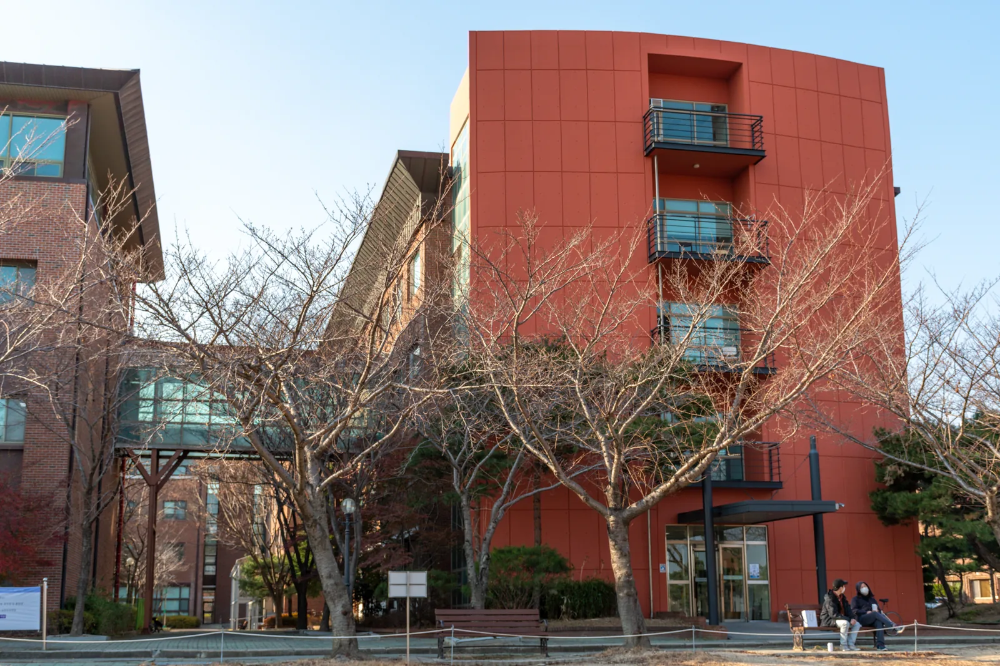

이곳은 어떤 곳인가요?
뉴턴홀은 오석관과 느헤미야홀 사이에 위치하고 있으며 팔각정을 중심으로 올네이션스홀과 연결되어 있습니다. 또한, 3층에는 오석관과 뉴턴홀을 이어주는 구름다리가 존재합니다. 뉴턴홀은 주로 기계제어공학부, 전산전자공학부가 사용하는 곳으로 두 학부 학생들을 위한 실습실과 실험실이 많이 있습니다. 106호에는 기계제어공학부 사무실, 309호에는 전산전자공학부 사무실이 있습니다
핫플레이스
뉴턴홀 안에서 꼭 가볼 만한 곳이에요.

건물 소개
뉴턴홀은 오석관과 느헤미야홀 사이에 위치하고 있으며 팔각정을 중심으로 올네이션스홀과 연결되어 있습니다. 또한, 3층에는 오석관과 뉴턴홀을 이어주는 구름다리가 존재합니다. 뉴턴홀은 주로 기계제어공학부, 전산전자공학부가 사용하는 곳으로 두 학부 학생들을 위한 실습실과 실험실이 많이 있습니다. 106호에는 기계제어공학부 사무실, 309호에는 전산전자공학부 사무실이 있습니다
뉴턴홀 안에서 꼭 가볼 만한 곳이에요.